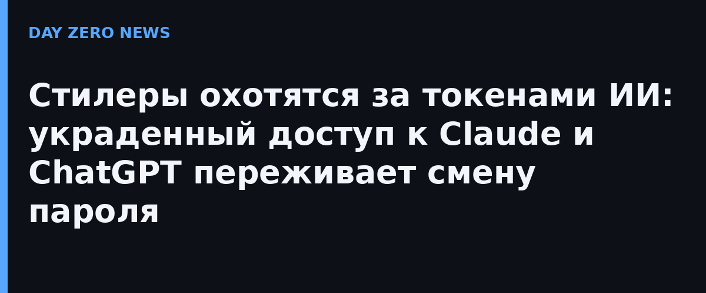

Компания SpyCloud в отчёте от 30 октября описала, как два семейства Windows-стилеров — WardenStealer (на Rust, распространяется по модели «вредонос как услуга») и Aoki — начали целенаправленно собирать учётные данные локально установленных ИИ-инструментов. WardenStealer вытаскивает из Claude Code OAuth-токены доступа и обновления, материалы авторизации подключённых MCP-серверов и даже конфигурационные инструкции ассистента; из Codex — ключ API OpenAI вместе с токенами; Aoki складывает добычу в отдельную категорию и охватывает ChatGPT, Claude Desktop, GitHub Copilot и Cursor. Всего с августа 2026 года переснято более 130 000 заражений WardenStealer.
Речь о краже учётных данных на конечной точке, а не о взломе самих сервисов. Но дьявол в деталях: действующая cookie или refresh-токен позволяют продолжить сессию без ввода пароля и без нового прохода MFA. Сброс пароля при этом не отзывает уже выпущенные токены — пострадавший уверен, что «защитился», а преступник сидит в аккаунте как аутентифицированный пользователь. Для разработчика цена выше: ИИ-инструменты обычно подключены к репозиториям, облакам и CI/CD-конвейерам, так что украденная сессия открывает путь в проектную инфраструктуру.
Подпольные магазины торгуют подписками и API-кредитами со скидкой 40–91% от розничной цены: например, 100 долларов кредита Codex или Claude предлагали за 8,94 доллара, а оптовые скупщики платят поставщикам до 35% от списаний по украденным ключам. Это кормит «LLMjacking» — потребление ИИ-сервисов за чужой счёт. В 2024 году исследователи Sysdig оценивали, что один эксплуатируемый аккаунт может принести более 46 000 долларов счетов за сутки, и находили обратные прокси, передавшие свыше двух миллиардов токенов. Краденые ключи, по их словам, могут идти и на несанкционированную дистилляцию — обучение маленьких моделей на ответах фронтирных.
SpyCloud советует относиться к токенам ИИ-инструментов как к полноценной зоне поражения при любом расследовании заражения машины разработчика: ротировать ключи и токены, отзывайте активные сессии (не только менять пароль), мониторить аномальное потребление API. Проверьте, какие MCP-серверы и интеграции были подключены к локальному агенту — скомпрометированная машина обнуляет доверие ко всем их ключам.